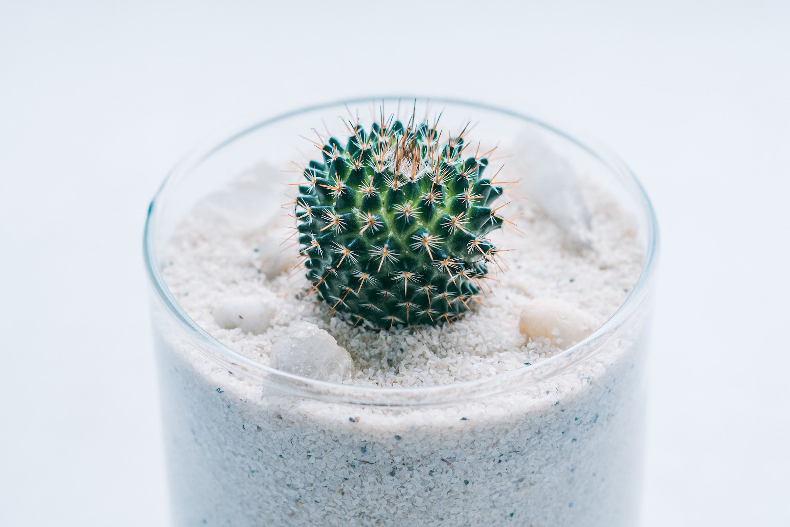
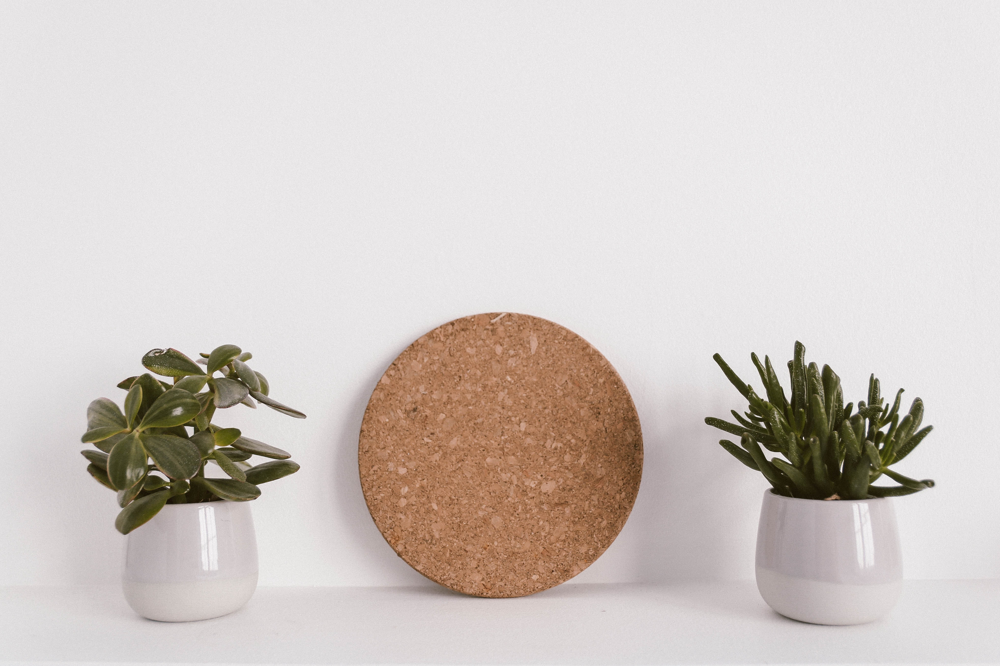
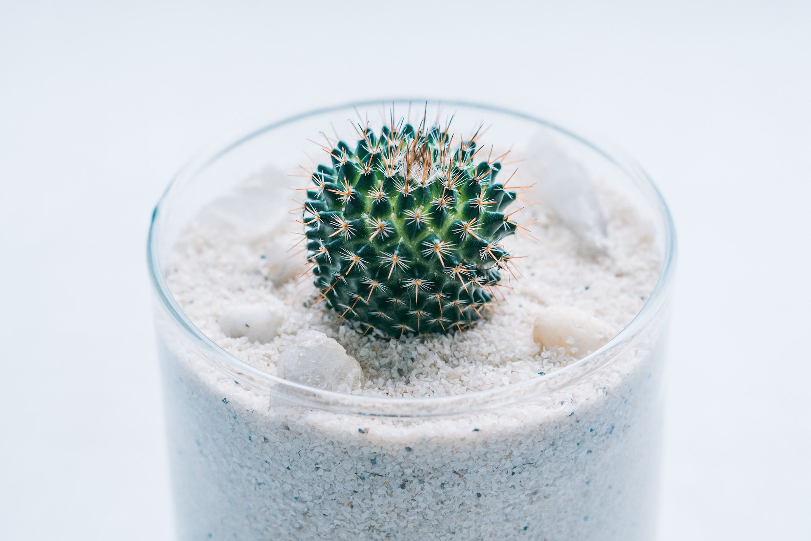
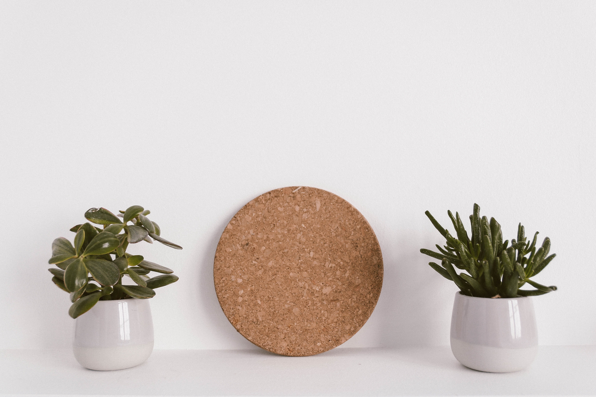

Sprout & Grow is Raleigh, NC's premier destination for high-quality organic plants. It offers a diverse selection of meticulously nurtured plants, expert guidance, and educational resources to empower individuals in cultivating thriving organic gardens. The nursery is committed to transparent and ethical practices, fostering sustainability and environmental stewardship within the community